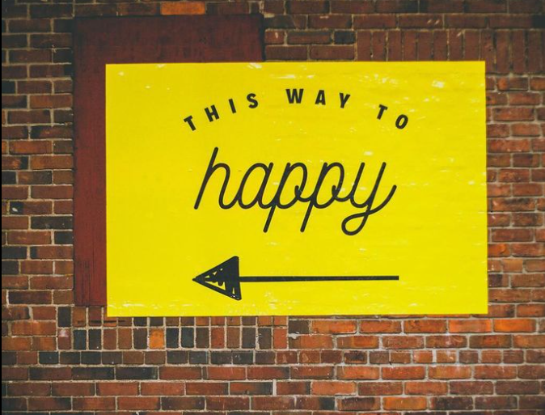
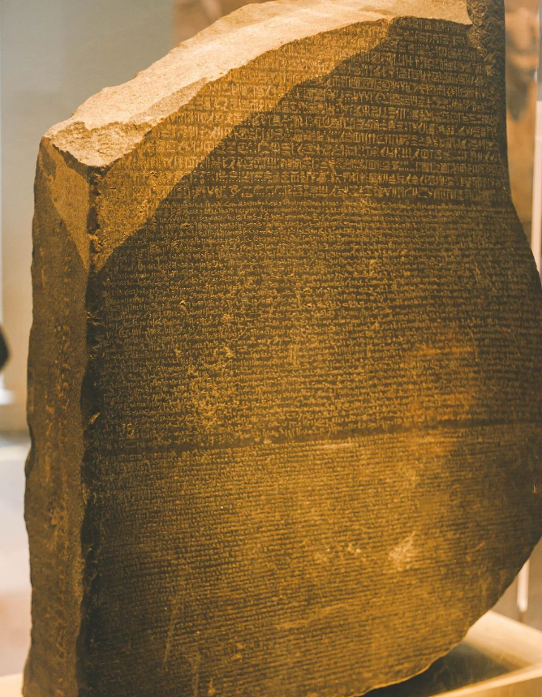
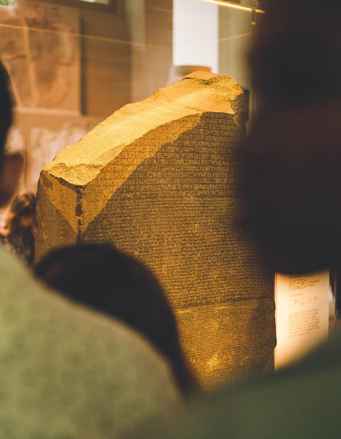

 Enter a world where ordinary becomes exceptional and where each shutter click tells a tale. We are storytellers at our photography studio who utilize our lenses to tell your special stories. We are not just photographers. No matter the occasion—from private moments to lavish celebrations—we are passionate about photography. Our mission is to capture moments in time, transforming fleeting grins and deep feelings into enduring memories. View our portfolio, find inspiration, and let us to express your narrative visually with each click. Welcome to our world of photography, where the essence of life's wonderful moments is captured in every frame.
  It would be a pleasure to collaborate with you and my team to realize your idea. Whether you're searching for striking headshots, remarkable event coverage, or imaginative commercial photography, we can work together to create pictures that speak to your spirit. Our canvas is your narrative, and we are excited to work with you to paint it as vividly and poignantly as we can. To start your photography trip, get in touch with us right now. Together, let's make memories that will last a lifetime. We are honored that you view us as your reliable partners in photography.